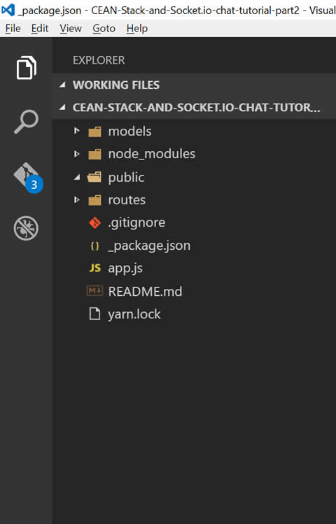
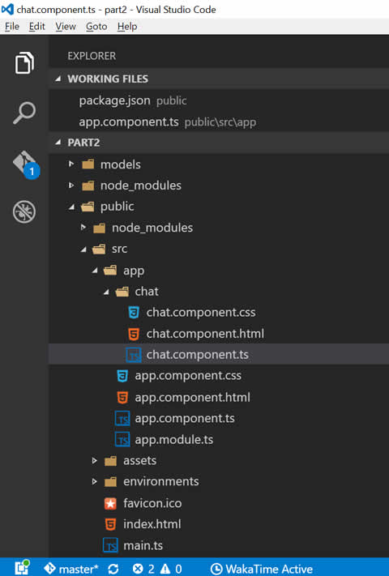
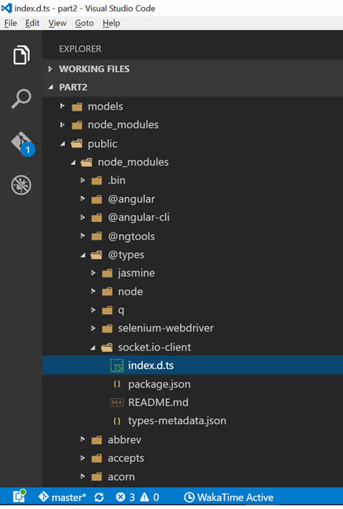

14 de
Fevereiro
de
2017
14 de
Fevereiro
de
2017
 16
minuto(s) de leitura
16
minuto(s) de leitura
Esse artigo é a segunda parte do artigo anterior, quando criamos o Back-end, configuramos o Socket.io no servidor e criamos um Front-end bem simples usando nenhum framework e configuramos o Socket.io no cliente através da biblioteca socket.io-client.js. Nesse artigo veremos como criar o mesmo Front-end bem simples mas agora com Angular 2.
Existem diversas maneiras de inicializar um projeto em Angular 2, nesse artigo vamos usar o Angular CLI.
O Angular CLI deve ser instalado globalmente na sua máquina através do NPM como é mostrado no site oficial: https://cli.angular.io/
$ npm install -g angular-cli
Como já definimos e configuramos na primeira parte desse artigo
a pasta public como o local onde nosso Front-end residirá, vamos abrir esta pasta
no terminal e inicializar um novo projeto Angular com ajuda do seu CLI.
Se você não acompanhou o artigo anterior, você pode fazer o download do código que criamos lá através deste repositório do GitHub.
Abra a pasta do projeto no terminal e navegue para a pasta public:
$ cd public
Aqui vamos inicializar um novo projeto Angular 2. Para simplificar esse exemplo não vamos
gerar arquivos de teste e nem configurar o git. Eu costumo pular o instalação dos pacotes
NPM também pois eu prefiro usar o yarn.
Vamos também dar o nome de cean-frontend para a nossa
aplicação Angular. O CLI do Angular nós dá 2 comandos para iniciar um novo projeto:
ng init: cria um novo projeto na pasta atual.ng new: cria uma nova pasta com o nome da aplicação e roda ong initdentro dela.
Vamos usar o ng init já que não queremos que o Angular gere uma nova pasta para nós. Mas
antes de rodar esse comando precisamos renomear o arquivo package.json que temos na raiz
do projeto Express, pois o Angular CLI, antes de gerar o código, verifica a existência de
qualquer arquivo package.json na estrutura de pastas, e se caso houver ele usa este como
sendo o seu arquivo de pacotes padrão, tenta sobrescrevê-lo e cria o projeto na mesma pasta dele.
Então, para contornar isso, vamos renomear temporariamente este arquivo para _package.json.
Outra coisa que devemos fazer é apagar o html e o js que criamos no artigo anterior dentro
da pasta public.
A estrutura do projeto até agora está assim:

A pasta public está vazia e o package.json renomeado.
Agora sim, dentro pasta public podemos rodar o ng-init no terminal:
$ ng init -n cean-frontend --skip-test --skip-git --skip-npm
Isso vai gerar todo o código inicial do Angular que precisamos. Pode excluir a pasta e2e
e os arquivos karma.conf.js e protractor.conf.js já que não vamos trabalhar testes aqui.
Agora também devemos renomear de volta package.json da raiz do nosso projeto,
retirando o underline que colocamos anteriormente.
Se você usou a flag --skip-npm agora você deve instalar os pacotes, eu uso o yarn para isso:
$ yarn
O yarn roda em cima do npm. Caso você não o tenha instalado na sua máquina você pode instalá-lo globalmente através do próprio npm.
$ npm install -g yarn
Se você prefere usar o NPM direto use $ npm install ou não use a flag --skip-npm no momento
do scaffolding do projeto que o CLI instala todos os pacotes automaticamente.
Com as dependências instaladas podemos rodar nosso front, também utilizando o CLI para isso,
na pasta public rode o comando:
$ ng serve -o
Isso vai acionar o Webpack que está embutido dentro do Angular CLI, que vai compilar
todo o código TypeScript em ES5 e carregar todos os módulos que estão sendo
importados a partir do arquivo main.ts por diante, vai minificar e agrupar todos os
arquivos em bundles e os servir pra nós em memória no nosso ambiente de dev. A flag -o
faz com que o CLI abra o navegador com a aplicação rodando, e ainda qualquer alteralçao no
código será refetida no navegador sem a necessidade de dar um refresh:
app works!
É claro que precisaremos de um processo de build para produção, fique tranquilo(a), vamos ver isso mais adiante.
Agora com o front rodando vamos customizá-lo.
Componentes em Angular
O Angular 2 é totalmente baseado em Web Components.
Web Component é a “combinação” de um template HTML com um JS
e opcionalmente um ou mais estilos CSS e que podem ser facilmente testados, usados
e reusados por toda a aplicação. No caso do Angular 2, os componentes são
escrito por default em TypeScript, tendo a opção também de escrever em JavaScript puro.
Cada arquivo .ts de um componente em Angular pode ter seu template e um estilo css definidos
inline através das propriedades template e style definidas no decorator @Componet
ou podem estar em arquivos separados referenciados nas propriedades templateUrl e o array
styleUrls. Também é passado como propriedade o seletor html desse
componente. E é assim que criamos um componente em Angular 2.
O boilerplate que o CLI nos gerou vem com o componente principal da aplicação, pois como já
dito anteriormente tudo é componente em Angular 2, inclusive a nossa aplicação também é um
componente, pai de todos os outros componentes e também tem o seu seletor. Se você abrir
o arquivo app.component.ts vai ver que o seletor está definido como app-root. E se você for
adiante e abrir o index.html vai ver que o app-root está sendo invocado lá, e é lá que
nossa aplicação inteira vai rodar.
Vamos criar o component Chat com ajuda do CLI. No terminal, pare o servidor com ctrl + c
e ainda na pasta public, use o seguinte comando:
$ ng generate component chat
Isso vai criar um componente com o nome Chat no lugar certo na estrutura da nossa aplicação e
seguindo a nomenclatura e convenção do Angular: dentro da pasta app e dentro de uma pasta
nova chamada chat. Como mostrado abaixo:

Se você abrir o arquivo chat.component.ts vai notar que o seletor desse component é app-chat.
Então vamos abrir o template do nosso componente principal, app.component.html, e
substituir:
<h1>
{{title}}
</h1>
Por:
<app-chat></app-chat>
E em chat.component.css, estilize o elemento p do nosso novo componente:
p {
font-size: 36px;
font-weight: bold;
}
Rode o servidor denovo $ ng server -o e se tudo estiver certo você vai ver no navegador
o texto:
chat works!
Pronto, nosso componente filho está sendo renderizado na tela. Agora vamos customizá-lo e deixá-lo com a mesma cara do Front-end anterior.
Customizando o Componente
Em app.component.html substitua o código por:
<ul id="messages">
<li *ngFor="let msg of messages">{{ msg }}</li>
</ul>
<form action="">
<input [(ngModel)]="chatBox" name="chatBox" autocomplete="off" />
<button (click)="send()">Enviar</button>
</form>
O que está sendo feito no código acima é a criação de uma lista ul de mensagens sendo que o
li está sendo repetido para cada mensagem dentro do array chamado messages que será
definido e populado no JavaScript deste componente, criando assim o data binding entre o template
e o código JavaScript. Utilizamos a diretiva *ngFor do Angular 2 para fazer essa “cola” (bind)
e percorrer o array.
O segundo elemento html é um formulário com um input do tipo texto chamado chatBox também
“colado” ao JavaScript através do ngModel. Esta “cola” é do tipo two-way-databind
pois englobamos o ngModel entre colchetes e parênteses [()], assim toda vez que o valor
dessa propriedade mudar, em qualquer lugar, será refletido tanto no HTML quanto no JS.
Também criamos um botão “Enviar” com o seu evento click “colado” a um manipulador chamado
send que é uma função que recebe o valor atual do input chatBox.
Em app.component.css, estilize nosso componente da seguinte forma:
#messages,* { margin:0;padding:0 }
* { box-sizing:border-box }
body { font:13px Helvetica, Arial }
form { background:#000; padding:3px; position:fixed; bottom:0; width:100% }
form input { border:0; padding:10px; width:90%; margin-right:.5% }
form button{ width:9%; background:#82e0ff; border:none; padding:10px }
#messages { list-style-type:none }
#messages li { padding:5px 10px}
#messages li:nth-child(odd) { background:#eee }
Estes html e css foram retirados da documentação do Socket.io e adaptados para esse artigo.
As diretivas de formulário do Angular (ngModel, click, *ngFor, etc) usadas acima
dependem de módulos do Angular que devem ser importados no módulo pai do componente
que os está usando. O módulo pai do nosso componente é o módulo principal da aplicação - a
classe AppModule - definida em app.module.ts.
O comando do CLI usado para gerar o componente já faz essa importação
para a gente. Se você abrir o arquivo app.module.ts vai ver que o ChatComponent
está sendo importado lá e inserido no array declarations assim como o módulo
FormsModule, responsável pelas direticas em questão, também está sendo importado e
declarado em imports. O HttpModule também está presente, vamos usá-lo mais pra frente.
No nosso template o botão “Enviar” invoca uma função chamada send e a nossa lista <ul>
repete um array chamado messages. Bora alterar a classe do nosso componente para atender
esses requisitos então. Abra o arquivo chat.component.ts e deixe-o assim:
import { Component, OnInit } from '@angular/core';
@Component({
selector: 'app-chat',
templateUrl: './chat.component.html',
styleUrls: ['./chat.component.css']
})
export class ChatComponent implements OnInit {
// propriedades do view model
messages: Array<String>;
chatBox: String;
constructor() {
// valores iniciais para as propriedades
this.messages = [];
this.chatBox = "";
}
// function send()
send() {
if(!this.chatBox)
return;
console.log('sending message:', this.chatBox);
this.messages.push(this.chatBox);
this.chatBox = "";
}
ngOnInit() {
console.log('chat.component initialized');
}
}
No código acima primeiro criamos as propriedades messages do tipo array de Strings e a
chatBox do tipo String. Atribuímos valores iniciais a elas no Construtor da classe e
criamos o método send que checa se a propriedade chatBox tem um valor, se esta condição
for verdadeira, inclui o valor no array messages, e a propriedade chatBox é
reinicializada com um valor vazio. Como o array messages está vinculado ao elemento
<li> do template através do *ng-for e a propriedade chatBox vinculada ao input no
template através do ngModel, essas mudanças se refletirão na tela e tudo funcionará
como esperado.
Se você abrir o Front-end agora, tudo deverá estar funcionando, porém agora em Angular 2. Digite um texto no campo e clique no botão “Enviar”. As mensagens enviadas irão aparecer na tela uma após a outra com cores de linha alternadas.
Agora precisamo fazer a parte do Socket.io funcionar como antes, como pode ser visto no final do último post, para sermos capazes de enviar e receber mensagens de e para outros sockets conectados, só que agora no Angular 2 também.
Criando um cliente do Socket.io no Angular 2
Nosso front-end tá quase pronto, agora precisamos usar o Socket.io no método send para enviar a mensagem
em broadcast.
Então pra finalizar nosso Front-end vamos instalar e configurar o client do Socket.io nos moldes do Angular 2.
O socket.io-client é uma biblioteca e também está disponível como um módulo no repositório
do npm.
Se você abrir a pasta node_modules dentro da pasta public vai encontrar a pasta socket.io-client,
isso significa que ele já está instalado, pois ele já vem no projeto criado pelo CLI.
Caso não encontre basta instalá-lo através do npm:
$ npm install --save socket.io-client
Para utilizarmos essa biblioteca precisamos importá-la em nosso código.
Abra novamente o arquivo chat.component.ts e inclua a seguinte linha após o @angular/core:
import * as io from 'socket.io-client';Isso vai importar todos os métodos e propriedades públicas do módulo
socket.io-client dentro de uma variável chamada io.
Se você rodar o Front-end agora vai deparar com o erro:
*Cannot find module ‘socket.io-client’**.
Isso acontece pois o Angular, através do Webpack, importa módulos em TypeScript. No TypeScript nós
temos tipos estático, no JavaScript puro não. O socket.io-client é uma biblioteca escrita
em JavaScript puro, então o Webpack, que compila e carrega os módulos TypeScript para o
Angular, não consegue fazer seu trabalho pois não encontra nenhum módulo .ts com o nome
socket.io-client e então nenhum módulo com esse nome é encontrado.
Para resolver isso precisamos definir tipos para a biblioteca que queremos usar criando
um arquivo .ts para ela. Se você abrir o arquivo de configuração do TypeScript,
tsconfig.json vai ver a propriedade typeRoots apontando para ../node_modules/@types.
É alí que o compilador do TypeScript vai procurar por tipos para bibliotecas importadas
em JavaScripts. Poderíamos criar um novo diretório alí com o nome socket.io-client e
um arquivo index.d.ts definindo e exportando esses tipos e o TypeScript saberia o que
compilar. Porém para nos ajudar com isso existe o repositório online Typings com essas
definições de tipos para diversas bibliotecas que não são escritas em TypeScript.
Se caso a biblioteca que você precisa não possuir um typing disponível, basta criar um bem
simples em uma pasta com o mesmo nome da biblioteca e um arquivo index.d.ts dentro
fakeando isso.
O socket.io-client possui um typing, então vamos instalá-lo. Na pasta public rode o comando:
$ npm install --save-dev @types/socket.io-client
Usamos --save-dev pois precisamos de Typings apenas no ambiente de desenvolvimento, nenhum
arquivo de Typings e TypeScript vai para produção, apenas JavaScript, assim não precisamos de Typings
em produção.
Feito isso você pode verificar a instalação.
Abrindo a pasta node_module/@types você verá a
pasta socket.io-client com o arquivo index.d.ts exportando o módulo com todos os tipos.

Se você rodar o front novamente verá que o erro sumiu.
Muito bem, agora vamos alterar nosso componente para que cada vez que o método send()
for invocado ele emita o evento mensagem_mano junto com o valor da propriedade chatBox
para todos os sockets conectados.
Na classe do componente Chat (chat.component.ts) faça isso:
import { Component, OnInit } from '@angular/core';
import * as io from 'socket.io-client';
@Component({
selector: 'app-chat',
templateUrl: './chat.component.html',
styleUrls: ['./chat.component.css']
})
export class ChatComponent implements OnInit {
// propriedades do view model
messages: Array<String>;
chatBox: String;
// -----> nova propriedade
socket: any; // <-------------
constructor() {
// valores iniciais para as propriedades
this.messages = [];
this.chatBox = "";
// ------> Instanciando o Socket.io
this.socket = io();
// Sempre que o servidor emitir o evento 'mensagem_mano', o socket do
// usuário conectado vai capturar esse evento e executar a função callback
// que adiciona o valor recebido no array de messages
this.socket.on("mensagem_mano", (msg: string) => {
console.log('receiving message:', msg)
this.messages.push(msg);
}); // <-----------------
}
// function send()
send() {
if(!this.chatBox)
return;
console.log('sending message:', this.chatBox);
// -------> pede ao servidor para executar o evento 'mensagem_mano'
// e transmitir 1 parâmetro que vai para todos os usuários
// conectados, inclusive para quem enviou
this.socket.emit("mensagem_mano", this.chatBox); // <------------
this.chatBox = "";
}
ngOnInit() {
console.log('chat.component initialized');
}
}
PS: os novos blocos de código incluídos estão entre // -------> e // <------------
Primeiro criamos uma nova propriedade do tipo any chamada socket e no construtor da
classe definimos esta propriedade como uma instância de socket.io-client que importamos
anteriormente dentro da variável io. Ainda no construtor da classe definimos um ouvinte
para o evento mensagem_mano que irá capturar todas mensagens transmitidas pelo evento emitido
por qualquer socket, inclusive as mensagens do próprio usuário que a enviou, do mesmo jeito
que fizemos no último código da parte 1 desse artigo. E na função send() ao invés de jogarmos
o valor do chatBox para dentro do array vamos passá-la pra frente e deixar a cargo dos
ouvintes de todos os sockets adicioná-lo ao array.
Para testarmos precisamos do Back-end e do Front-end rodando. O servidor Back-end está
configurado no Express para rodar na porta 3000 e o Angular está rodando “virtualmente”
na porta 4200. “Virtualmente” pois o código JavaScript é servido em memória e não fisicamente.
Precisamos gerar fisicamente os arquivos do Angular em bundles e serví-los também na porta
3000 como arquivos estáticos através do Express. Rodando assim tanto o Back-end quanto o
Front-end na mesma porta, o que é um requisito para esse exemplo em específico funcionar.
Para isso precisamos que o nosso Front-end passe por um processo de build para produção.
Fazendo o Build do Angular para Produção
O Webpack é o cara responsável por fazer esse processo.
Se você abrir o arquivo angular-cli.json vai perceber que já existe um processo de
build configurado que será usado pelo Webpack. Analizando a propriedade apps desse arquivo temos:
"root": "src": onde os arquivos de desenvolvimento estão"outDir": "dist”: em qual pasta os arquivos compilados e prontos para a produção serão gerados"index": "index.html: em qual arquivo html os bundles com os códigos compilados devem ser injetados"main": "main.ts": a partir de qual arquivo o processo de carregamento de módulos e compilação deve iniciar
Com essas 4 informações já temos uma idéia de o que o Webpack vai fazer. E para realizar
esse processo de build utilizamos novamente o CLI do Angular com o comando ng build.
Então no terminal, dentro da pasta public rodamos o comando com a flag -p informando
que estamos fazendo um build para produção:
$ ng build -p
Rodando a Aplicação
Com o build finalizado você verá que foram gerados vários bundles para nossos códigos
(componentes), para os vendors (Angular e socket.io-client) e para os estilos css.
E que esses arquivos todos foram gerados dentro de um nova pasta chamada dist.
É essa pasta que devemos servir com estática dentro de nossa stack. Então no arquivo app.js
onde configuramos o Express, vamos configurar iss como já havíamos
feito para a pasta public colocando /dist na frente
app.use(express.static(path.join(__dirname, "public", "dist")));Agora com a pasta configurada, no terminal navegue até a raiz do projeto e rode o servidor Express:
$ node app
E acesse http://localhost:3000/ em vários navegadores ou abas e envie mensagens de chat
entre eles!
No artigo anterior nós configuramos um end-point no nosso Back-end que nos retorna o
histórico de mensagens do chat, se você acessar http://localhost:3000/mensagens vai ver
que também está funcionando. É nesse end-point que vamos integrar nossa aplicação com o
CouchBase no próximo artigo!
Aí você me pergunta: porquê raios o Couchbase e não MongoDB? Porquê usar CEAN e não MEAN?
Eu preparei uma pequeno texto respondendo isso: O Couchbase e suas Diferenças do MongoDB.
O código fonte dessa parte está neste repositório do Github
dentro da branch part-2. Confere lá!
Deixe o seu comentário, dúvidas e etc… Nos vemos no próximo artigo!